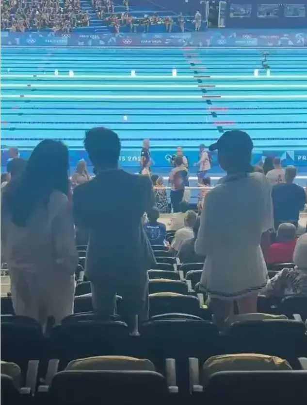

41岁的香港霍英东集团副总裁霍启山，日前传出狂追曾夺五枚奥运金牌的跳水运动员、今为国家队教练的陈若琳。近日媒体意外拍到了霍启山和奥运冠军谷爱凌同框的照片，网友又帮开始他配对。
陆媒报导，从爆出的照片来看，当日霍启山身穿一套非常干练的西装外套，和郭晶晶、哥哥霍启刚坐在一起，网友指霍启山无愧是霍家几个兄弟中最为潇洒帅气的，「完全都被他给迷住了」。
另一张照片中，霍启山和谷爱凌、另外一个女性站在一起，对于谷爱凌的出现同样也是引起了大量网友的争论，照片中的谷爱凌穿的非常漂亮，一身白色的短裙套装，将自己的大长腿给成功秀出来。尽管谷爱凌比霍启山小了二十多岁，但在合照中，两人的年龄差距并不明显，霍启山依然保持着一种少年感。

霍启山和谷爱凌这次同框合照让网友杀疯了，大量的网友甚至变成了红娘，强力喊话两个人还是在一起吧，不得不说网友真的是为霍启山操碎了心。